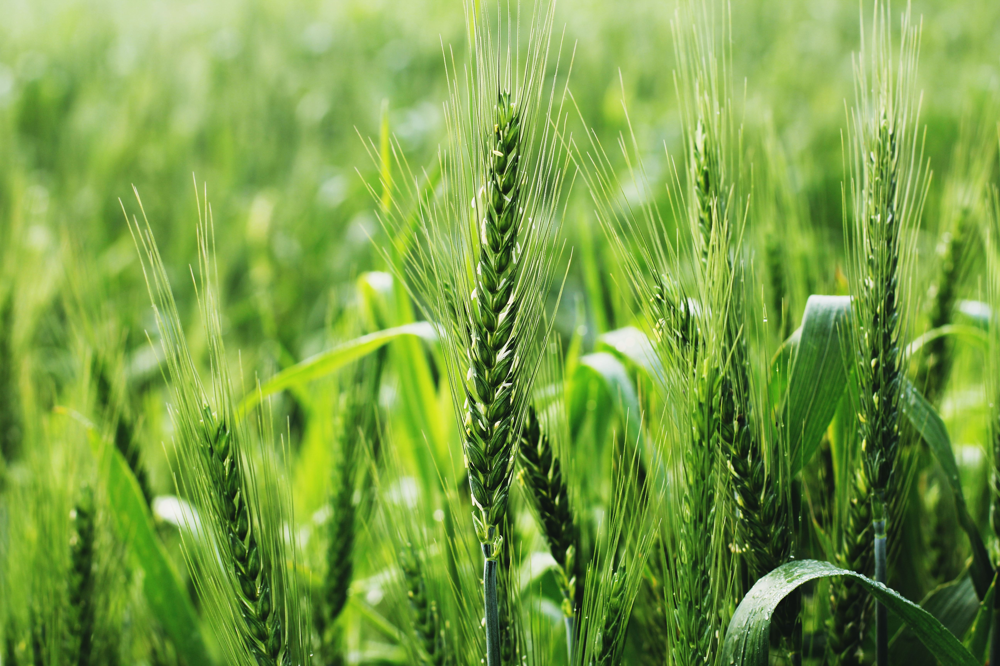

Makanan Pokok

1. Padi
Padi (bahasa latin: Oryza sativa L.) merupakan salah satu tanaman budidaya terpenting dalam peradaban.
Meskipun terutama mengacu pada jenis tanaman budidaya, padi juga digunakan untuk mengacu pada beberapa
jenis dari marga (genus) yang sama, yang biasa disebut sebagai padi liar. Padi diduga berasal dari India
atau Indocina dan masuk ke Indonesia dibawa oleh nenek moyang yang migrasi dari daratan Asia sekitar 1500 SM
Padi termasuk dalam suku padi-padian atau poaceae. Terna semusim, berakar serabut, batang sangat pendek, struktur
serupa batang terbentuk dari rangkaian pelepah daun yang saling menopang daun sempurna dengan pelepah tegak, daun berbentuk
lanset,warna hijau muda hingga hijau tua, berurat daun sejajar, tertutupi oleh rambut yang pendek dan jarang, bagian bunga tersusun
majemuk, tipe malai bercabang, satuan bunga disebut floret yang terletak pada satu spikelet yang duduk pada panikula, tipe buah bulir
atau kariopsis yang tidak dapat dibedakan mana buah dan bijinya, bentuknya hampir bulat hingga lonjong, ukuran 3 mm hingga 15 mm, tertutup
oleh palea dan lemma yang dalam bahasa sehari-hari disebut sekam, struktur dominan padi yang biasa dikonsumsi yaitu jenis enduspermium.